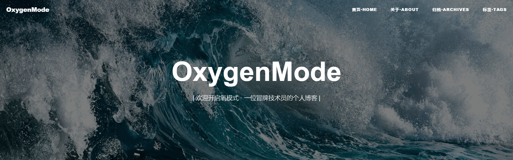

第一段的小标题要很正式哟
不知从何说起
是这样的，想做什么事情的话，想好怎么下手是很难的。建站之后的第一篇更是要写的好一些才能算得上是一个良好开端嘛~，说起来这一个星期基本都是在建这个个人博客，替换掉了之前那个也是挂在github上的，半死不活的空壳博客。
总的来说，Hexo+GitPage建站的方式极大地简化了我这种冒牌技术员的建站流程，一般来讲，博主第一篇都是码一下“哦哟~我是怎样怎样怎样把这个博客建成的”，从心路历程到技术步骤到操作方式。所以我就并不打算费老大力气再码这种几乎千篇一律的东西。先感谢一下网站主题（Theme）设计与构建的一位前端开发者黄玄（☜这是他的博客），以及对其主题作了修改与移植的网友顏御軒（☜这是他的博客）。对于素不相识的两位开发者努力的成果表示欣赏，并将其代码开源分享的行为表示欣慰，总之由衷感谢，特别喜欢这个主题。

当然不劳而获的我本人也是对代码进行了少许修改以调整视觉效果和展示功能。说出来你可能不信，其实不仅仅是改了个大图，具体改了什么鉴于个人心虚就不详细说明了。
不如从此说起
二零一七年四月十七日（2017.04.17），现在正是午后，窗外下着雷雨（同学告诉我说还有冰雹），四月的长春依旧还没多少春天的温柔。正在码字的我现在在学校图书馆的电子阅览室躲着，心里还在惦记着找不到的学生证。水杯里的泡的柠檬水要喝干了的现实让我感到一丝焦虑，更让我焦虑的是上面扯了一堆废话我觉得你可能不喜欢。
那就从这一刻开始，我单方面宣布，氧模式bate1.0正式开启，一个冒牌技术员的个人博客正式开启。建立这个博客的初衷其实就是为了单纯的完成之间烂尾的一个目标吧，今天终于算是稍微给之前的目标一个稍微满意的答案。其次，还是为了完成一个富有逼格的个人展示环境，之后我会努力把【关于·ABOUT】页面完善起来，做个简单的个人介绍&简历，来应对即将面临的毕业于就业。
目前打算在之后的一段时间里，会不定期看心情更新一些乱七八糟的内容，主要会是在生活方面来更新吧。比如旅行、音乐、美食之类轻松愉悦的内容。尽力加上一些能力范围呢具有技术性的内容。
对于之后的改进，目前来讲我已经有了一些更多构想，但是由于急于上线看效果的原因，这些构想还未来得及实现，在以后的日子里应该会逐步改进。
第二段的小标题需要些华丽
从这里起就是扯淡了
码字到这里，我很绝望的发现，这个开篇写的似乎一塌糊涂。大概是因为现实中的某些焦虑导致码字有些分心，以至于我往前翻了翻发现文风凌乱。
关于没找到的学生证，导员给我回复的信息只有一串“hhhhhh”。